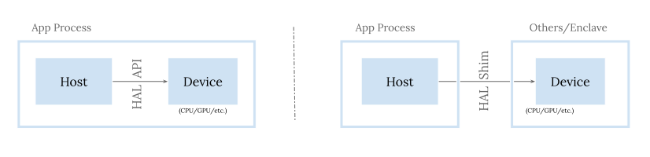
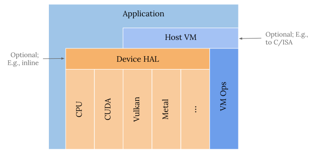

Previous blog posts overviewed the MLIR dialect hierarchy for kernel code generation (CodeGen) and zoomed in on the Linalg and Vector dialects among them. Now I will switch to discuss the runtime side a bit, in order to provide a holistic view of MLIR-based machine learning (ML) compilers. This one touches the foundation and basics, including the target landscape, runtime requirements and designs to meet thereof.
ML System Runtimes
The main tasks of a runtime are to manage resources and schedule execution. So runtime is a commonly seen concept in ML systems (and beyond), given we pretty much have such needs everywhere. Every ML system tends to have its own runtime, though it can mean different scopes in different contexts. We can have runtimes orchestrating ML training workload across multiple nodes in a datacenter; we can also have runtimes on a single node dispatching tensor operations to a specific accelerator. Runtimes of different scopes can nest each other to compose the full stack.
Single-node runtimes
In this blog post, I will focus the discussion onto the single-node runtime, which runs on the CPU to manage resources and dispatches ML workload to one or more accelerators (CPU, GPU, etc.) in the same node. The node is a machine with a form factor of a desktop, laptop, cellphone, or whatever. It sits at the lowest layer and is the foundation of the hierarchy, so it’s worth our attention first. We can chat about upper layers in future blog posts.
I will further use IREE as an example of such single-node runtimes when discussing concrete designs. It’s certainly not the only runtime based on MLIR techniques, as we will show soon—one would need to decide what machines to target and take opinions on how to abstract differences. But it was and still is pretty much co-developed together with MLIR itself and has evolved mature enough to support real-world cutting edge models like BERT, GPT, stable diffusion, and others. IREE is also part of the OpenXLA stack now and will become a cornerstone to support production use cases in the future.
Landscape and Requirements
There are a wide range of cases in the single node landscape. It can be as powerful as a datacenter machine hosting multiple AMD EPYC CPUs and multiple NVIDIA A100 GPUs. It can also be as compact as a cellphone where we have a few ARM big.LITTLE CPU cores and a Qualcomm Adreno or ARM Mali GPU integrated on the same system-on-chip (SoC).
Different cases would mean different requirements for runtimes. Though for better software engineering, we don’t want to build a completely different runtime for each case; we would like to have one unified stack and common codebase to support as many cases as possible and reasonably. We can achieve that by designing according to the more demanding use scenarios, and layering properly as a toolbox to allow optionality and customization. Supporting many spectrums across a large number of axes and specializing to a certain solution point is straightforward than the opposite; that is N to 1 is easy, 1 to N is hard.
Cloud/server vs. edge/client
There are many ways we can slice and dice the landscape. A common division is cloud/server machines vs. edge/client devices. Computation power is of course vastly different; though the more important difference from a runtime’s perspective is whether we control the hardware/software stack.
In cloud/server machines, we do, and we mostly decide to adopt one or two generations of NVIDIA GPUs and the CUDA software stack. If we only ever care about this division, it’s reasonable to design the runtime around the CUDA ecosystem, to gain the most from it. It would overfit and render it hard to generalize to accelerators of different architectures or even GPUs from other vendors though. It’s an explicit trade off.
In edge/client devices, we don’t. Actually even the end user may not—building a custom PC might allow the end user to select CPUs/GPUs so that’s some controls there; cellphones are highly integrated devices where there is a long chain of component sourcing not involving the end user: cellphone original equipment manufacturers (OEMs) source SoCs from SoC vendors, which in turn sources CPU/GPU IPs from CPU/GPU IP vendors.
The result is that in this division, there are tons of device variants, featuring different vendors and architectures—speaking of GPUs, we have AMD, Apple, ARM, Imagination, Intel, NVIDIA, Qualcomm, etc., each of them have multiple generations of architectures. On top of them, there are different platforms, Linux, Windows, macOS, Android, iOS, and so on, each mandating its own software stack. For example, for native GPU APIs, we have OpenCL/Vulkan for Linux/Android, DirectX for Windows, and Metal for macOS/iOS.
If we care about this division, we clearly need to design proper abstractions to handle all these different stacks in order to target them all. This is nothing special in the computer world—we have operating systems or various middleware performing similar tasks. We have different layers of abstractions trying to hide the variants in lower layers to provide common interfaces to upper layers to be manageable. The trade off is also about generality and performance, and we favor generality in this case; access to more vendor-specific techniques can be harder.
Edge/client requirements
From the above it should be obvious that edge/client cases are more demanding: we need to 1) support multiple vendors with many architecture generations and multiple GPU software stacks. If we can have a design that satisfies their needs, it is natural to extend to support cloud/server cases as that’s pretty much just a special case—one vendor with one or two architecture generations and one GPU software stack.
Aside from above, the edge/client side also poses additional challenges that are typically not a concern for the cloud/server side. I’ve written about them more extensively in a previous blog post so I won’t elaborate on those aspects again. Just to quickly summarize, we need to additionally consider:
- Multiple chip IP blocks with OS dynamic scheduling and throttling. Especially on a cellphone, the OS continuously schedules tasks and throttles chip IP blocks in order to control power consumption and heat dissipation. Tasks may transfer among big or little cores; GPUs may be turned on and off and run at varying frequencies. An responsive runtime would need to to 2) dynamically schedule according to system loads, assigning ML tasks to big/little CPU cores or the GPU on the fly.
- Small and variable workload sizes with latency sensitivity. In the cloud/server we can rely on large batch sizes to drive GPU utilization. On end-user personal devices, ML workloads typically only involve one data point (image, language/audio sentence, etc.), and we would like the result to be available as quickly as possible for better user experience. This requires the runtime to be 3) efficient w.r.t. various dimensions involving scheduling, execution, and synchronization.
- Resource constraints with app and task multi-tenancy. In the cloud/server we can have beefy CPUs/GPUs and install lots of RAM; the ML runtime can typically assume exclusive usage of the resources. For an end-user personal device, all running apps and tasks compete for the limited resources. Foreground interactive tasks have priority in order to maintain the responsiveness of the whole system. This requires the runtime to be 4) cooperative w.r.t. resource utilization, e.g., not claiming all GPU memory upfront as a pool for own usage, adjusting scheduling to make sure memory footprint stays in check.
- Deployment constraints. Unlike in the cloud/server, edge/client personal devices typically have limited storage and apps are updated via app stores. So model/runtime size and bandwidth consumption can be a real concern. This requires the runtime to be 5) minimal w.r.t. dependency and binary size.
- Deep integration with application logic. ML inference is just a component of the final application; typically we need to perform preprocessing/postprocessing on input/output image/audio/etc. for the full flow. This requires the runtime to be 6) non-intrusive, optional, pluggable w.r.t. choices. It should not force design choices on the app; instead, options should be provided to let the app suit its own needs.
- Security and privacy concerns. Even in the cloud/server, we may have needs to isolate workloads from different customers, e.g., fine tuning a foundation model with enterprise data from different companies. End-user devices contain sensitive personal information that we don’t want the ML system to be a surface for leaking and exploiting that. This requires the runtime to be 7) secure by construction.
Although cloud/server might not care much, a runtime satisfying the above needs would not hinder and actually can help cloud/server use cases, e.g., multi-vendor support can enable adopting AMD/Intel GPUs in the datacenter, cooperative resource utilization reduces the chances of out of memory and crash, and so on. Actually stepping back even further, the above requirements are also applicable to general software engineering, given that ML is not much different than other software that crunches numbers.
In the following discussion I’ll refer to the above requirements as [req#N] in superscript.
Abstraction and Architecture
With the target scope and associated system requirements, we can now look at what the proper abstraction levels are and how to architect the runtime accordingly.
Host-device separation
GPUs are not the only kind of accelerators that exist in a node; we can also see various forms of tensor/neural processing units and others. GPUs are common because of their general purpose and mature software stack. Though GPUs cannot run a full ML model entirely; we still need CPUs to manage resources and coordinate execution. Other accelerators are even so.
It’s natural to adopt a host-device separation to mirror this reality, where
the host, i.e., the CPU, schedules work and the device, i.e., accelerators,
executes it.
For example, in CUDA terminologies, the host would perform
gpu_kernel<<<...>>>(...), while the device would perform
__global__ void gpu_kernel(...) {...}.
For Metal, that would be
[compute_encoder dispatchThreadGroups:... threadsPerThreadgroup:...]
together with kernel void gpu_kernel(...) {...} in a .metal file.
For Vulkan, similarly—vkCmdDispatch(command_buffer, ...) with
void main() {...} in a compute shader.
Note that here accelerators can also be CPUs themselves: the host can be a CPU thread dispatching tasks to the “device”, a thread pool, picking up tasks and running kernels to invoke accelerated vector/matrix intrinsics. So this gives us a unified architecture. It’s also an example of N to 1, where using the CPU as the inlined “device”, is straightforward.
The separation enables flexible organization—the host and device can co-exist in the same process on the same node; the device can also be in another remote node, and we just have a device shim in the host process to convey requests and communicate results.

Host VM abstractions
On the host side we have less architectures to handle, notably ARM64, x86_64, and the emerging RISC-V. Therefore, we also need some abstraction here to handle the differences [req#1].
The abstractions should be lightweight and performant, given the central role of CPUs in the overall picture [req#3]. Furthermore, due to the flexibility of CPU programming model, where we can freely cast integers as pointers and access the pointed-to memory, we need to be cautious regarding the exposed functionality for security concerns [req#7]. The nice aspect about ML is that we are operating in perfect loop nests within bounds, so we just need to provide a logical (i.e., using element offsets) rather than physical (i.e., using concrete pointers) memory addressing model. We also want to have a curated list of allowed operations to make sure we can structurally disable certain exploits.
The way to achieve this is to define our own host virtual instruction set and virtual machine (VM) to execute them. Dense computation (e.g., matmul, convolution, etc.) of ML models are done via accelerators; what’s left are really resource tracking and management and shape calculation logic. So the virtual instruction set needs to have support for resources like buffers and their reference counting for lifetime management. It also needs to have basic integer arithmetic instructions for size/index calculation.
As discussed before, ML is typically just a part of the full application. There are additional needs that cannot be fulfilled by ML, e.g., image preprocessing and postprocessing, model weight/gradient uploading/downloading for federated learning, and such. We don’t want to put hard barriers on the application to isolate components; instead we would like to support as those functionalities as plug-in components when possible [req#6]. That would need additional pluggable runtime functionality. To support, we would need to register and load custom modules in the host VM. This is akin to how operating systems load binaries and shared libraries and resolve symbol references.
With a virtual instruction set we can then use compilers to generate code towards it, which effectively means using compilers to plan all the source management and workload dispatching. Here we just need to expose all those virtual instruction set instructions (or, VM ops) to compilers. That is very straightforward with MLIR. And what comes additionally is, with the the multi-level settings, we can further lower those VM ops down to LLVM ops and generate final CPU ISA code or C code—the VM layer is entirely optional [req#6].
In IREE, we have an optional and pluggable runtime host VM to provide the above functionality, including module loading and symbol resolution, execution stack and resource management. Its ops are exposed to the compiler. We can define various custom modules for different purposes, including core device HAL and VMVX support and other examples.
Device HAL abstractions
On the device side, as explained there are plenty of accelerators so we certainly need abstractions too. A good approach is to follow what’s mature there, using GPU APIs as a basis. Various TPUs/NPUs are still evolving; they will gradually become more and more programmable. Their APIs will also be more and more akin to GPU ones—at the end of the day, the API is mostly about preparing resources, dispatching workloads, and synchronization, which is common across accelerators. Right now we have various vendor-specific solutions at different maturity in this space; a cross-vendor API is needed to make this space more tractable.
Speaking of GPU APIs, we have various choices, either open standards covering many platforms and vendors (e.g., OpenCL, OpenGL, Vulkan), or platform-specific APIs (e.g., DirectX for Windows, Metal for Apple platforms), or vendor-specific ones (e.g., CUDA for NVIDIA, oneAPI for Intel, ROCm for AMD, etc.).
Some of these APIs focus more on graphics (e.g., DirectX, Metal, Vulkan, etc.), and some are purely for compute (e.g., CUDA, OpenCL, ROCm, etc.). They all evolve; today those graphics GPU APIs can handle pure compute, including ML, workloads just fine, and the gap with pure compute APIs are smaller and smaller. I’ve written a previous blog post about Vulkan compute specifically, please feel free to take a look at the API surface area there.
Also, in the past few years, graphics GPU APIs have undergone a trend to expose lower level abstractions, represented by the introduction of Vulkan, DirectX 12, and newer versions of Metal. The goal is to give controls to developers, so that we can have thinner drivers with less magic, more functionality consistency, and more predictable performance. It comes with a cost for sure—those APIs are typically very verbose and unwieldy to directly develop against. (Metal is better on this front though.) That’s actually what we want for a runtime with all those demanding needs [req#3], and with a compiler to auto-generate the API calls, the downsize won’t really be a problem for us!
Vulkan, DirectX 12, Metal together are typically referred to as the modern graphics APIs, and they are quite similar1. So we can build a hardware abstraction layer (HAL) based on modern graphics and compute APIs. It can naturally provide high-fidelity abstraction of those APIs and inherit their benefits, including low level explicit controls, native support on various platforms and vendors [req#5], and others.
IREE’s runtime device HAL follows Vulkan compute, given Vulkan was the latest API with a careful thought API surface drawing learnings from decades of experience. Those HAL ops are also exposed to the compiler so that we can auto-generate the scheduling there. As said before, the core host VM only supports very basic resource management and size/index calculation arithmetic, HAL itself is actually registered and invoked by the host VM as a custom module of function pointers.

Resource usage and synchronization
A GPU is a different processor from the CPU. It has its own instruction decoding facility and massive hardware parallelism. To fully utilize the processor, we would want to push enough workload to the GPU to saturate the compute units and reach peak compute performance.
However, in reality, it is a tough goal to achieve—memory performance is lagging behind compute, and especially in recent years, the gap is larger and larger with developments of tensorcore units and alike. So we need to use more and more tricks in kernel CodeGen to improve the memory throughput and hide the latency, e.g., using coalesced memory transactions, leveraging shared memory, performing software pipelining, and so on. With enough blood and tears, we can push single GPU kernels, especially matmul, to achieve a high percentage of the theoretical peak performance.
Though, what is often ignored is the bigger picture and the inefficiency of runtime and the whole system, especially in multi-layer multi-component settings. We might create/destroy too many GPU resource objects (e.g., GPU buffers, GPU synchronization primitives, etc.) on the critical path. Buffers might be copied or we might perform a full device wait going through different layers or components. Such inefficiencies can easily tank the overall performance2 and overshadow all gains from fast kernel implementations.
Such challenges call for careful design in ML runtimes. Though we are not solving such problems for the first time. Developers have been using GPUs for full applications like games for decades. Arguably we are facing even more demanding situations there, given that we need to handle millions or billions of triangles with mixed rendering and compute tasks in real time. It’s natural to follow best practices of performant GPU usage for graphics.
Examples include allocating GPU resource objects in advance, using resource pools to amortize cost, baking rendering/compute pipelines ahead, performing fine-grained synchronization according to resource lifetime and usage pattern, and so on. These are actually all pretty automatable via compilers using lifetime and dependency analysis and unification/hoisting transformations. IREE’s host compiler is just realizing such purposes, which I’ll cover in a later blog post.
Other examples include preparing GPU work in advance by recording command buffers and chaining as much work as possible to run asynchronously on the GPU. This would really help the overall application where we have different steps of processing like image cropping, running ML models, and then rendering images back to the screen. The goal would be to avoid involving GPU as much as possible—each time we involve the CPU we risk waiting on either the CPU or GPU and wasting computation power.
To support such use cases, we can pull more components in the same system
to break down the boundary that causes buffer copies and forced
synchronizations.
There is a limit of how much we can do though, as we cannot rewrite the whole
world.
Then the requirement [req#3, req#6] would be on the ML runtime to
support importing and exporting buffer and synchronization primitives as a
native functionality, so that when embedding ML in an application, at least
the ML component won’t be a hard barrier.
This is plausible because at the end of the day, cross-layer cross-component
resource passing and synchronization is handled in the OS kernel; different
layers or APIs are just wrapping OS synchronization primitives, e.g.,
it’s all about struct dma_fence in Linux.
IREE follows such asynchronization first and cooperative approach. Note that it naturally supports synchronization cases—we can just play the command buffer inline and perform immediate blocking wait on synchronization primitives for targets that do not have native support. Again, going from more demanding cases to less ones is easy.
Deployment fat binaries
We are targeting a diverse single-node landscape. Host device separation and proper host/device abstractions lay down the foundation for a unified runtime. For the device kernels, we want to perform ahead-of-time (AOT) compilation to avoid runtime dependency [req#5] on just-in-time (JIT) compilers and runtime JIT overhead. It would mean we go down to the lowest level of kernel representation as possible, e.g., machine native instruction for CPU, PTX for CUDA, SPIR-V for Vulkan.
It naturally calls for using a fat binary deployment format where we contain kernels for multiple vendors and architectures. Even for the same vendor architecture, we may decide to specialize different kernels for different cases, e.g., large/small matmul, aligned/unaligned shape. In the runtime we can probe the hardware capability to decide which kernel to dispatch dynamically. If we factor in real time system loads, we can dynamically schedule to different IP blocks too [req#2]! The requirement is that we have the same graph partitioning and dispatch region formation though, to allow switching kernels for different architectures.
IREE uses FlatBuffers for its deployable fat binaries, containing both host VM instructions and various device kernel code. This delivers a self-sufficient encoding of the original ML model, including both host scheduling and device execution logic. By default IREE uses the same graph partitioning and dispatch region formation scheme to make sure kernels are targeting the same source subgraph to be exchangeable.
Closing Words
This blog post discussed the single-node landscape and its challenges and requirements for a ML runtime. To meet the requirements, It further derived the necessary abstractions, architectures and designs. IREE is what we are building to realize such an envisioned runtime; links are provided for its core mechanisms matching the designs. Ben Vanik, the architect behind IREE, has a great slide deck here discussing more IREE runtime details. Highly recommended if you would like to learn more.
Hopefully I gave enough explanation of single-node runtime foundation and basics, together with why IREE is designed in the current way. This hasn’t touched how we use compilers to auto-generate host scheduling logic yet, i.e., the Flow/Stream/HAL/VM dialects in IREE and their transformations. Till the next blog post! 😊
-
This article offers a great comparison among these APIs regarding their concepts, in case you are familiar with one but not others. ↩︎
-
This article offers a great case study of identifying and fixing buffer and synchronization issues between CPU and GPU to improve overall performance. ↩︎